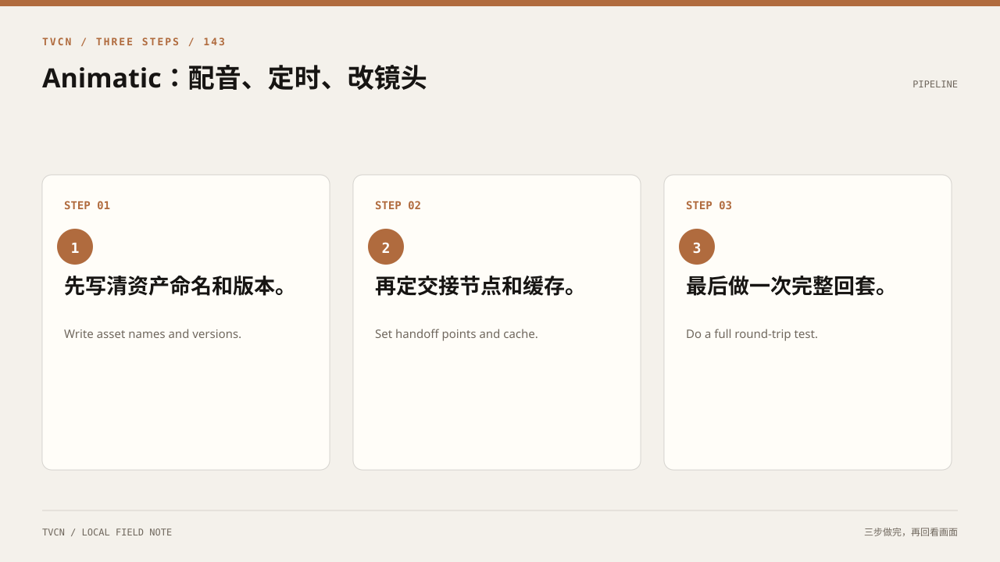

先定时间，再定细节
Animatic 用临时配音、简单画面和准确时长，检查镜头能不能接、节奏是否成立。每个镜头标秒数，配音先录，不要等动画完成再配。
把 animatic 当成可失败版本：如果这一版看不懂故事，后面加原画和特效也不会补救。
边界
Animatic 不是成品预览。不要在这里追求画面质量，但镜头长度和动作方向必须已经定下来。
Animatic 先锁三样，再进动画
Animatic 的作用不是“好看”，是把时长、配音和镜头顺序锁死。三样没锁，动画一开工就会反复改。
- 配音：先录 scratch，按真实语速，不要用读稿节奏；台词长度决定镜头长度。
- 定时：按 24fps 或项目帧率排，给每个镜头标出入点/出点；不要用“大概 3 秒”。
- 音乐：只放 temp，标出需要留白的位置；temp 不能直接交付。
验收：把 animatic 给剪辑以外的人看，问“哪里想快进”。想快进的地方先剪短，再进 layout。
DIAGRAM / Pipeline
三步流程

现场
先录配音，按真实语速定时；每镜写秒数，总时长控制在目标 110%；再补画。
怎么做
- 先录配音，按真实语速定时。
- 每镜写秒数，总时长控制在目标 110%。
- 再补画，先锁时间。
别踩
别先画完再配音；语速一改，所有镜头都要重排。
图片说明：本页封面、图解与步骤图是编辑示意或结构图，不是本页实测照片，也不能当作器材测试证据；AI 辅助生成的图会在图注标出。判断器材或画面，以正文的测试条件与现场记录为准。